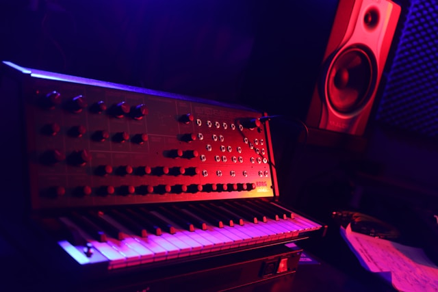

Stúdió komplexumunk

Stúdió 1: A "Neural Beat" Főterem
Ez a kiadónk legnagyobb és legfejlettebb felvételi tere. A helyiség akusztikáját mérnökök tervezték meg a tökéletes, reflexiómentes hangzás érdekében. Ideális teljes zenekarok élő rögzítésére, dobfelvételekre és nagyszabású projektekhez.
A terem büszkesége a nagyméretű analóg keverőpult, amely meleg és karakteres hangzást biztosít a modern digitális precizitás mellett.

Stúdió 2: Az "Analog Pulse" Szintetizátor Műhely
Kifejezetten elektronikus zenei producerek és zeneszerzők számára kialakított kreatív kuckó. A szoba fala mentén legendás analóg és moduláris szintetizátorok sorakoznak, melyek azonnal hadra foghatóak.
Itt nincsenek határok: a klasszikus techno basszusoktól kezdve a legmodernebb synthwave textúrákig bármilyen elektronikus zenei hangzásvilág életre kelthető.

Stúdió 3: A "Vocal Echo" Akusztikus Fülke
Kristálytiszta énekfelvételek, rap vokálok, szinkronok és akusztikus hangszerek rögzítésére optimalizált izolált fülke. A speciális hangelnyelő paneleknek köszönhetően a felvett anyag teljesen tiszta és utólag tökéletesen formálható marad.
A legmagasabb kategóriás csöves mikrofonjaink garantálják, hogy az énekes hangjának minden apró részlete és dinamikája rögzítésre kerüljön.
.jpg)
Stúdió 4: A "Digital Horizon" Utómunka Stúdió
A végső simítások otthona. Ez a helyiség a keverési (mixing) és maszterelési (mastering) folyamatokra lett kihegyezve. Itt nincsenek felvételi mikrofonok, helyettük tűpontos monitor hangfalak és high-end digitális processzorok segítenek.
A stúdióban készülő zenék itt nyerik el azt a végső, erőteljes és tiszta hangzást, amivel később a Spotify-on, Apple Music-on vagy a klubok hangfalaiból dübörögni fognak.